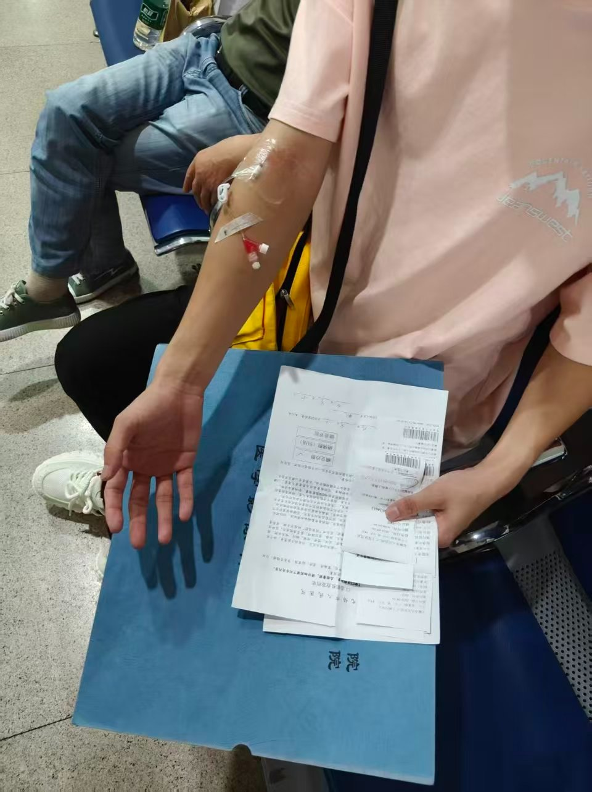
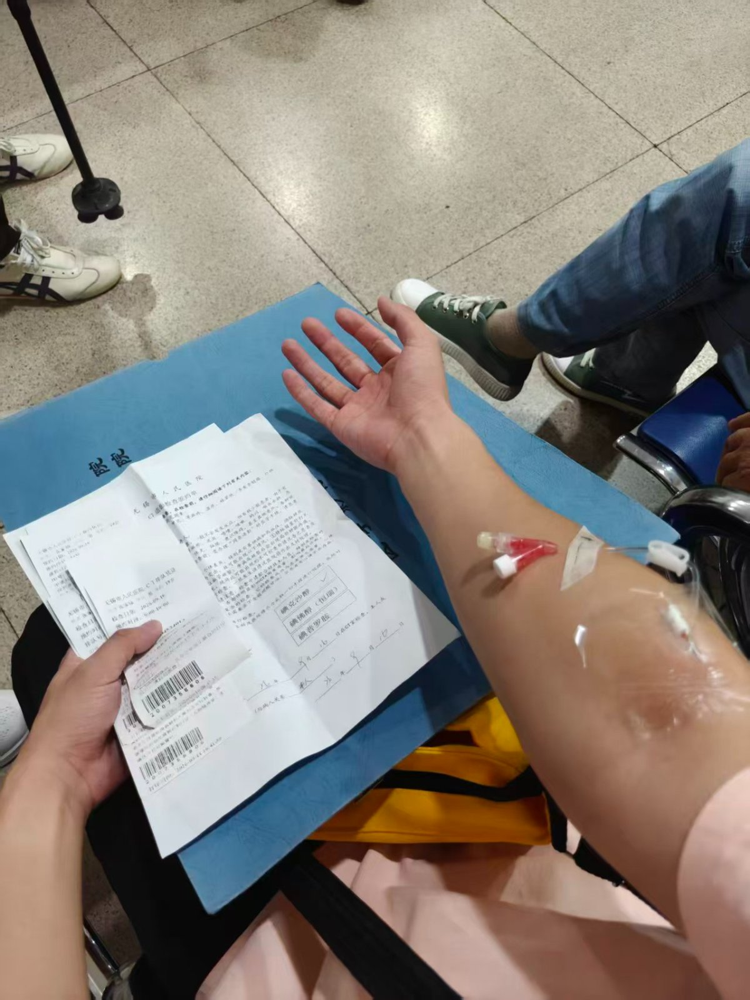
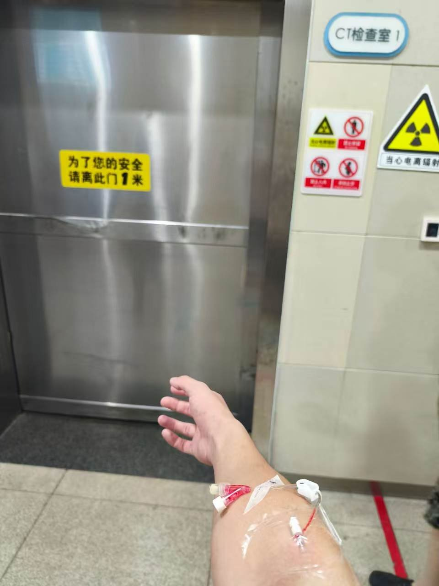
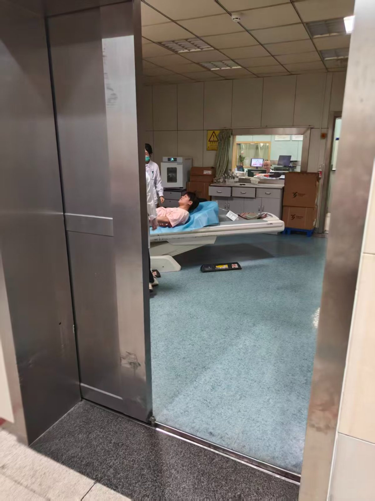
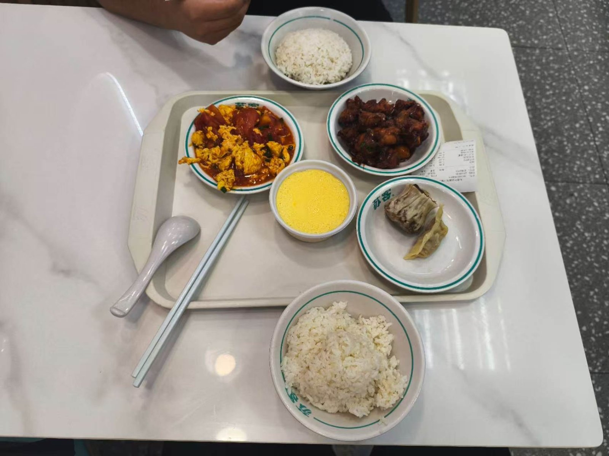
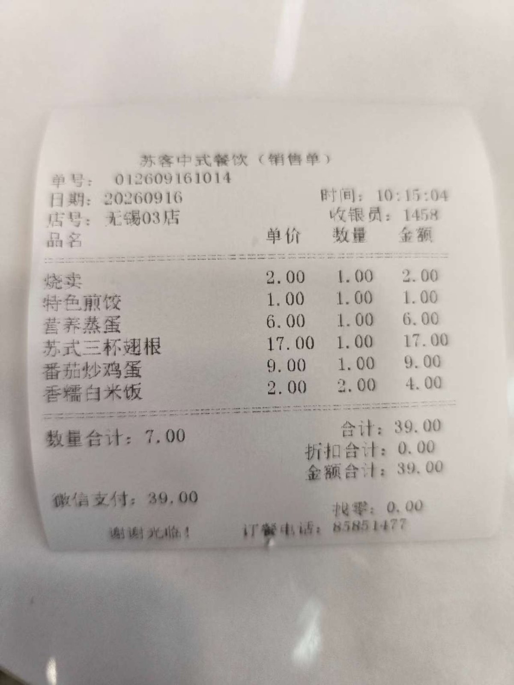

做加强ct
2026.9.16
早上我跟lsh一起去医院做了加强ct，我们按照流程步骤，需要打一个专门的药（造影剂），要打针我害怕，因为桌上放着一个针头巨大的针管，吓哭了，然后医生拿着消毒棉签给我涂着要扎针的位置，我害怕了，然后她说：针头大一些。！我吓着了，不会和桌上一样大吧。我瞬间安慰自己没事的，我也不知道为什么我会害怕打针，我怕那种痛感，那种本来什么感觉都没有，突然有痛感让我不安，其实并没有那么疼，和普通体检扎的针差不多，也就大一点点，我看着已经打上的针头，还有一点别的装置在上面，我按照医生说的别屈肘，并没有什么，我看着这些在我身上的东西，我拍了张照片，和我的朋友分享过去，跟他们分享日常。等到里面之后和普通做的ct一样，并没有什么。我做完之后和lsh想着来得来了，找个地方玩玩，可太晒了30°的天，做完ct是十点多，后面到下午那么久一直热着，受不了。正好我也没吃饭，找了个快餐去吃，其实我并没有吃过快餐，或者说快餐是什么？我没有概念，我不懂，进去后我才知道，原来这个就是米饭然后自己选菜，我联想到之前抖音刷到的“快餐的处境”相关的视频，原来这个东西就是这样的。（我是一个没有生活经验的人，我不懂美食，我在家都是家里做什么我吃什么，之前的时候看着人家说着乱七八糟的菜名，哇，好厉害，这些到底是什么高级的东西，我不懂，直到我长大了，上大学，在食堂选菜时，看着别人选菜说着菜名，我看着那些平常随时可见的菜，他们叫这个名字吗？这不就是西红柿，土豆啥的吗？做法不一样？ 我祛魅了或者说我才意识到我的无知，但即使我知道了这个原来是这样的，而我仍然有一种距离感，我感觉我不懂，总感觉有一种隔阂感，摸不透，摸不准，我抓不住。）我们选了几个菜，好贵，心疼，我两调侃着，吃下了这顿饭，我企图多吃些米饭来把尽量回点本，好好笑，我吃着还担心吃多了精致碳水，身体发炎，我现在脸上一堆痘，好笑与矛盾。这家店连着沃尔玛，我听说过但没见过，我认为它是很高端的大型商场，我进去了，不大没什么人，毕竟工作日加这个时间点，的确没什么人，我以为这种地方会一直有许多的人，（后面想到这里我发现我这个人很偏见，自以为是很多，我感觉我的一生一直活在偏见之中，我知道我的偏见来自客观现实对城市生活的接触的少，我又想去抱怨我的家庭，即使它是客观的，算了我不说了。是我自己过意不去。），我两逛了逛沃尔玛，我企图去感受网上别人所说的逛街，逛商场的感觉，我始终感觉我体会不到，我不懂，有一种隔阂一直在隔着我，可能是那个没主见的戒不掉，一直在寻找别人感受到的生活，却始终不明白，也许感受只来源自自己，我不懂，戒不掉也不懂。 {我始终在寻找标准答案，拥有自己的空间，享受着生活，活着自在，可我一直没做到，我的欲望来自对新事物的渴望，对现处于环境的逃脱，我逃避，我始终认为我处于底层，我应该去改变，我必须去改变，为我想要的，可我做不到，那个男孩萌生了想法，却始终意识不到自己的局限性，他无能，他抱怨，他哭泣，他怒吼，他沉默，世界的虚无始终给予他沉默，少年加强了他的抱怨，抱怨，哭泣与怒吼，但至少少年成熟了一些，意识到也许做才能改变，但现实的冲击与思想的不稳定，让他仍然绝望。 男孩对抗家里，尝试把自己拉出那个培养了自己一个童年的环境，他好像没有成功，因为变量来了，男孩变成了少年并正在尝试进入青年，在社会这个变量中，少年仍然是无能的，他绝望，他崩溃，但他这次尝试去点燃那个崛强的少年，也许他仍然会被虚无湮灭，但他在一次一次唤醒，倔强不应只在黑暗来临时才到来，学会常驻它。加油戒不掉。 戒不掉的自我感动（ye xu）} 逛完沃尔玛我们并没有逗留，而是打车回了宿舍。






· 完 ·
写于 2026.09.18 20:00